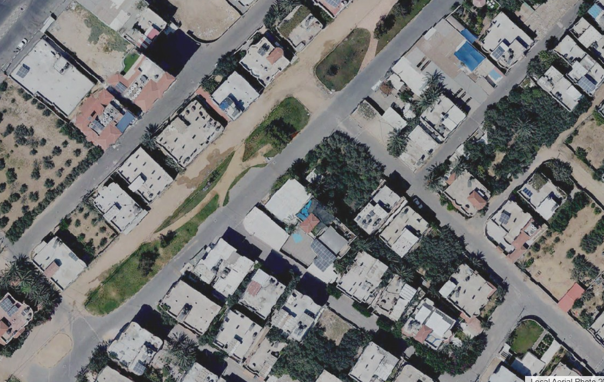
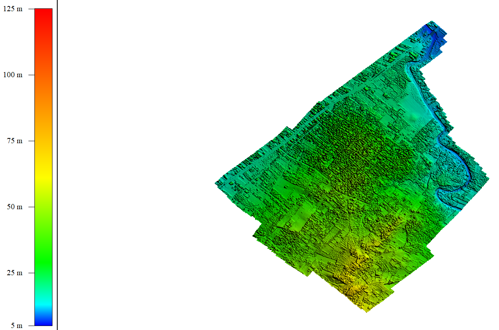

UAV Mapping + DSM + Orthomosaic
High-resolution aerial mapping converted into municipal-ready GIS layers.
UAV outputs for planning, roads, reconstruction, agriculture, infrastructure inspection, and fast visual verification.
Problem
Engineering and planning teams needed a current, precise visual reference instead of relying on outdated imagery or repeated site visits.
My Role
Planned flight coverage, processed imagery, produced orthomosaic and DSM outputs, checked accuracy, and prepared GIS layers for municipal use.
Workflow
- Define coverage area and flight requirements.
- Collect aerial imagery and control references.
- Process imagery into orthomosaic and DSM outputs.
- Extract relevant features and prepare GIS-ready layers.
- Package outputs for planning, monitoring, and reporting.
Results / Impact
8 km2UAV imagery coverage
15 km2DSM products
3-7 cmground resolution range
Visual Proof

